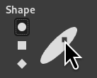

The Ink tool uses a simulation of an ink pen with a controllable nib to paint solid brush strokes with an anti-aliased edge. The size, shape and angle of the nib can be set to determine how the strokes will be rendered.
There are different possibilities to activate the tool:
-
From the main menu: → → .
-
By clicking the tool icon in the Toolbox.
-
By pressing the K keyboard shortcut.
- Ctrl
-
This key changes the nib to a Color Picker.

Normally, tool options are displayed in a window attached under the Toolbox as soon as you activate a tool. If they are not, you can access them from the main menu through → → which opens the option window of the selected tool. The available tool options can also be accessed by double clicking the corresponding tool icon in the Toolbox.
- Mode, Opacity, Expand Layers
- See the Common Paint Tool Options for a description of tool options that apply to many or all paint tools.
- Adjustment
-
- Size
-
Controls the apparent width of the pen's nib with values that ranges from 0 (very thin) to 200 (very thick).
- Angle
-
This controls the apparent angle of the pen's nib relative to horizontal.
- Sensitivity
-
- Size
-
This controls the size of the nib, from minimum to maximum. Note that a size of 0 does not result in a nib of size zero, but rather a nib of minimum size.
- Tilt
-
Controls the apparent tilt of the nib relative to horizontal. This control and the Angle control described above are interrelated. Experimentation is the best means of learning how to use them.
- Speed
-
This controls the effective size of the nib as a function of drawing speed. That is, as with a physical pen, the faster you draw, the narrower the line.
- Type and Shape
-
- Type
-
There are three nib shapes to choose from: circle, square, and diamond.
- Shape
-
The geometry of the nib type can be adjusted by keeping the mouse button pressed while on the small square at the center of the Shape icon and moving it around.
